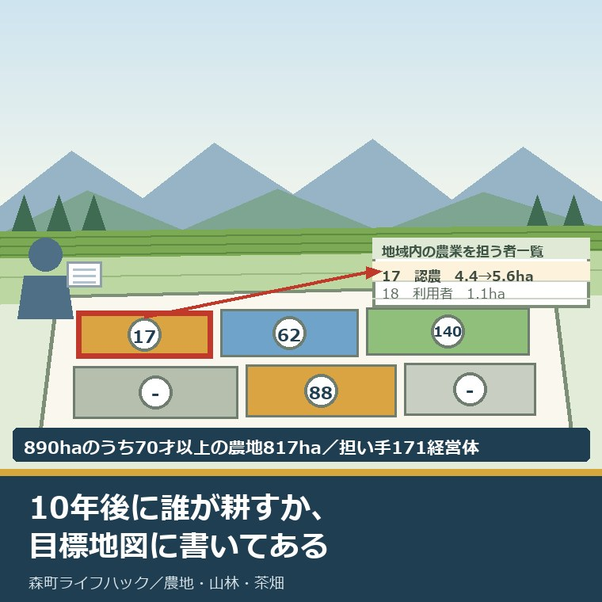
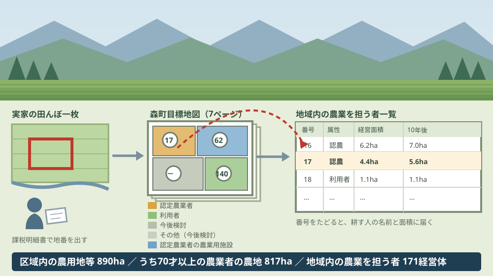
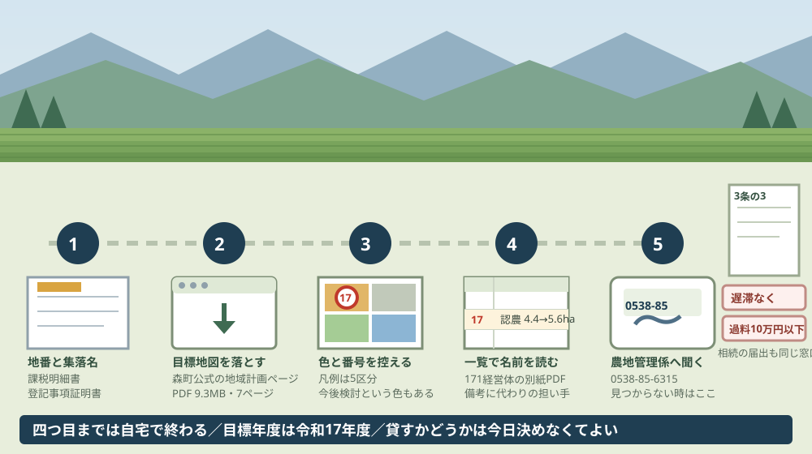

森町の地域計画と目標地図、10年後の耕作者を確かめる

この記事の要点
Q. 実家の田畑を相続しました。誰が耕すか決めていませんが、町の計画には何か書かれていますか。
A. 森町目標地図に書かれている可能性があります。森町は2026年3月12日に地域計画と目標地図を更新しました。目標地図は農地1筆ごとに10年後（令和17年度）の耕作者を色と番号で示した7ページのPDFです。集落名と地番が分かれば、誰が引き受ける前提なのかを今日読めます。
静岡県周智郡森町（遠州森町）で、親から田や畑を相続した。登記は済ませたが、誰が耕すかはまだ決めていない。この記事は、その状態のまま何年か過ぎている方に向けて書いています。
森町公式サイトに、2026年3月12日更新の資料があります。ページ名は「農業経営基盤強化促進法に基づく地域計画について」。ここに、森町地域計画と森町目標地図が置かれています。
森町公式は、目標地図をこう説明しています。「地域計画では従来の人・農地プランに加え、農地1筆ごとの10年後の耕作者を示した『目標地図』を作成することで、目指すべき将来の農地利用の姿をより明確化するものとなっています」。
1筆ごと。つまり、実家の田んぼ1枚についても、10年後に誰が耕す前提になっているかが、すでに図面の上に書かれているということです。
今日は2026年8月27日。読み方の順番と、そこに書かれていない情報、そして今日できる一歩を並べます。
公式情報から確定できること
2026年8月27日時点で、森町公式の資料と農業経営基盤強化促進法・農地法の条文から確認できたことを並べます。計画の正式名称は森町地域計画、地図の正式名称は森町目標地図です。出典は記事の末尾に載せています。
一つ目。森町の地域計画は、町全域で1本です。森町公式に公表されている地域計画は、地区ごとに分割された複数の計画ではなく、森町として1つの区域にまとめられています。
二つ目。更新日は2026年3月12日です。ページの表記は「更新日：2026年03月12日」で、添付されている資料名にも「（令和8年3月12日更新）」と入っています。
三つ目。公表されているPDFは5点です。令和7年度 地域計画 協議の場の結果（187.9キロバイト）、公告文（105.4キロバイト）、森町地域計画（264.3キロバイト）、地域内の農業を担う者一覧（285.6キロバイト）、森町目標地図（9.3メガバイト）が並んでいます。
四つ目。目標地図は7ページのPDFです。実際に開いて数えた結果です。1本のファイルの中に、区域を分割した図面と、番号の索引が入っています。
五つ目。目標地図の凡例は5区分です。認定農業者、利用者、今後検討、その他（今後検討）、認定農業者の農業用施設。農地の色は、この区分で塗り分けられています。
六つ目。計画の目標年度は令和17年度です。森町地域計画（参考様式第5-2号）に「目標年度 令和17年度」と記載されています。10年後という言い方は、この年度を指しています。
七つ目。策定は令和7年3月26日、更新は令和8年3月12日の第1回です。同じ資料に「策定年月日 令和7年3月26日」「更新年月日 令和8年3月12日（第1回）」と明記されています。
八つ目。区域内の農用地等面積は890ヘクタールです。同じ資料によれば、内訳は田542ヘクタール、畑317ヘクタールです。
九つ目。70才以上の農業者の農地面積の合計は817ヘクタールです。同じ資料の（参考）欄の数字です。
十番目。今後農業を担う者が引き受ける意向のある農地面積の合計は95ヘクタールです。同じ資料の⑤欄の数字です。
十一番目。規模縮小などの意向のある農地面積の合計は、記載がありません。同じ資料の④欄は「－ha」となっています。
十二番目。現状の集積率は66パーセント、将来の目標とする集積率は80パーセントです。同じ資料に記載された数字です。
十三番目。地域内の農業を担う者は171経営体です。地域内の農業を担う者一覧（4ページ）の合計欄に「計 171経営体 757.3ha 作業受託10.5ha」とあります。
十四番目。10年後の合計は852.5ヘクタールです。同じ合計欄の10年後の数字で、作業受託は9.9ヘクタールとなっています。
十五番目。担い手一覧には、1経営体ずつ個別に記載されています。欄は属性、農業を担う者（氏名・名称）、経営作目等、経営面積、作業受託面積、10年後（目標年度：令和17年度）、目標地図上の表示、備考です。
十六番目。属性は記号で示されます。同じ資料の注記によれば、認定農業者は「認農」、認定新規就農者は「認就」、これらに該当しない農用地等を継続的に利用する者は「利用者」と記載されます。
十七番目。備考欄には、代わりに耕す人を書くよう努めることになっています。同じ資料の注記5は「備考欄には、農業を担う者として位置付けられた者に不測の事態に備えて、代わりに利用する者を記載するよう努めてください」と記しています。
十八番目。資料には森町の農業集落名が並んでいます。黒田、三倉、中村、上野平、大河内、乙丸、大府川、中野、大久保、田能、木根、大鳥居、葛布、西俣、黒石、下問詰、上問詰、鍛治島、亀久保、嵯塚、城下、天宮、下一、下二、向天方、橘、薄場、米倉、片瀬、赤根、谷崎、宮代西、宮代東、草ヶ谷、上川原、円田上、円田下、谷中、中川上、中川下、牛飼、市場、下飯田、中飯田、上飯田、東組、西組、鴨谷、福田地、南戸綿、北戸綿。記載は52件で、うち「大久保」が二度出てくるため、異なる名称は51です。
十九番目。協議の場の結果は令和7年12月17日に公表されています。協議の場の結果のPDFに「森産第930号 令和7年12月17日 農業経営基盤強化促進法第18条第1項の規定に基づき、公表します。森町長 太田 康雄」と記されています。
二十番目。協議の結果を取りまとめた日は令和7年12月16日、第2回です。同じ資料の記載です。
二十一番目。協議の場は法律に基づく手続きです。農業経営基盤強化促進法第18条第1項は、区域ごとに「定期的に、又は時宜に応じて、農業者、農業委員会、農地中間管理機構、農業協同組合、土地改良区その他の当該区域の関係者による協議の場を設け、その協議の結果を取りまとめ、公表するものとする」と定めています。
二十二番目。目標地図の根拠は法第19条第3項です。同項は「同意市町村は、地域計画においては、前項第三号の目標として同項第一号の区域において農業を担う者ごとに利用する農用地等を定め、これを地図に表示するものとする」と定めています。
二十三番目。法律の条文に「目標地図」という語はありません。条文は「これを地図に表示するものとする」までで、目標地図という呼び名と「10年後」という言い方は、森町の資料と国の様式の側にあります。
二十四番目。目標地図の素案は農業委員会が作ります。法第20条第1項は、市町村が「農業委員会に対し、地域計画のうち同条第三項の地図の素案を作成し、当該同意市町村に提出するよう求めるものとする」と定めています。
二十五番目。見直しの周期は法律で決まっていません。法第19条第5項は「同意市町村は、情勢の推移により必要が生じたときは、地域計画を変更するものとする」と定めるだけで、何年ごとという定めはありません。
二十六番目。変更するときは、案を2週間縦覧します。法第19条第7項は、公告の日から2週間の縦覧と、利害関係人が縦覧期間満了の日までに意見書を提出できることを定めています。森町公式は2026年8月27日時点で「公告・縦覧している地域計画（案）はありません」と記しています。
二十七番目。所有者の努力義務は法第21条第2項にあります。同項は「地域計画の区域内の農用地等の所有者等は、当該農用地等について農地中間管理機構に対する利用権の設定等を行うように努めるものとする」と定めています。努力義務であって、貸す義務ではありません。
二十八番目。相続した農地には、農地法第3条の3の届出があります。同条は、権利を取得した者が「遅滞なく」その農地の存する市町村の農業委員会に届け出なければならないと定めています。
二十九番目。届出を怠ると過料の対象です。農地法第69条は「第三条の三の規定に違反して、届出をせず、又は虚偽の届出をした者は、十万円以下の過料に処する」と定めています。
三十番目。森町は届出時期を「相続発生後10カ月以内」と案内しています。森町公式の「農地の相続について」（2026年1月1日更新）の記載です。条文の側に月数の定めはないので、これは町の案内上の目安と読むのが正確です。
三十一番目。担当は森町役場の農地管理係、電話は0538-85-6315です。住所は〒437-0293 静岡県周智郡森町森2101-1。ファックス番号と担当メールアドレスの直接の記載はなく、問い合わせフォームが案内されています。

この絵で描きたかったのは、地図と一覧が別のPDFに分かれているという点です。色を見ただけでは、誰が耕す前提なのかは分かりません。番号を控えて、もう1本のファイルを開く必要があります。
もう一つ描いたのは、「今後検討」という色が凡例に入っていることです。10年後の耕作者が決まっていない農地も、決まっていないまま図面に載っています。
森町の田畑に置き換えると、この数字は何を意味するか
ここからは、森町地域計画に載っている数字を割り戻します。分母を書いたうえで、私の計算であることを先に断っておきます。
まず、いちばん重い数字から。区域内の農用地等890ヘクタールのうち、70才以上の農業者の農地面積の合計が817ヘクタールです。割ると91.8パーセントになります。
森町の農地の9割が、70代以上の方の手で維持されている。これは「いずれ担い手が要る」という将来の話ではなく、10年のうちに耕す人が入れ替わる面積が9割ある、という現在の話です。
次に、担い手の側を見ます。171経営体で10年後852.5ヘクタールを引き受ける計画なので、1経営体あたり4.99ヘクタールです。現在の757.3ヘクタールを171で割ると4.43ヘクタールなので、1経営体あたり0.56ヘクタール、およそ5反6畝ずつ増える計算になります。
私の商売の感覚では、この0.56ヘクタールは小さくありません。飛び地の5反が1枚増えれば、草刈りも水管理も行き来の時間も増えます。面積が増えるということは、機械と燃料と人の時間がそのぶん要るということです。
面積の差も見ておきます。890ヘクタールに対して、10年後の担い手の合計は852.5ヘクタール。差の37.5ヘクタールは、10年後も担い手一覧に名前が載らない面積です。現時点では890から757.3を引いた132.7ヘクタールが同じ状態にあります。
集積率も割り戻せます。890ヘクタールの66パーセントは587.4ヘクタール、80パーセントは712ヘクタール。目標を達成するには、10年で124.6ヘクタールを動かす必要があります。1年あたり約12.5ヘクタールです。
ここで気になるのが、④欄の「－ha」です。規模縮小などの意向のある農地面積の合計が空欄で、引き受ける意向のある面積だけが95ヘクタールと書かれています。
推測を交えて書きます。出し手の意向が数字として集まっていないのだと私は読みました。資料はそこまで説明していないので、確定ではありません。ただ、受け手の意向は集まっていて出し手の意向が空欄という並びは、実家の田畑を持っている側にとって他人事ではありません。
出し手の氏名は、公表資料のどこにも出てきません。担い手一覧に載るのは「農業を担う者」、つまり耕す側だけです。貸す側・持っている側は、面積の集計としてしか登場しません。
森町の農地の広がりを思い浮かべると、この数字は腑に落ちます。太田川沿いの平地の田と、山際の段になった畑。同じ1ヘクタールでも、機械が入る場所と入らない場所では引き受けやすさが違います。畑と山の境目の確かめ方は地籍調査の成果で境界を見る記事に整理しました。
良い点：森町の地域計画と目標地図の、よくできているところ
森町が2026年3月12日に公表した資料には、評価したい点が5つあります。順に書きます。
一つ目。1筆ごとに10年後の耕作者を地図で示したことです。文章だけの計画なら「担い手の確保に努める」で終わりますが、地図にすると、どの田がどの色で、誰の番号なのかが逃げようがない形で出ます。
二つ目。担い手一覧を別紙で全部出したことです。171経営体について、属性、経営作目等、経営面積、作業受託面積、10年後の面積まで載っています。合計だけで済ませることもできたはずですが、1行ずつ並べたのは手間のかかる仕事です。
三つ目。更新履歴を残していることです。「策定年月日 令和7年3月26日」「更新年月日 令和8年3月12日（第1回）」と書いてあるので、これが1年目の更新だと読み手が分かります。何度目の更新かを書かない資料は珍しくありません。
四つ目。協議の場の結果を先に公表していることです。令和7年12月16日に取りまとめ、翌17日に公表し、そのうえで3月に計画と地図を更新している。順番が法律の建て付けどおりに動いています。
五つ目。「今後検討」という区分を残したことです。決まっていない農地を無理に誰かの名前で埋めず、空白を空白のまま出している。読む側にとっては不安な色ですが、資料としては誠実です。
もう一つ、仕組みとして良いと思う点を挙げます。目標地図の素案を作るのは農業委員会だと、法第20条第1項が定めています。役場の机の上ではなく、地元を歩いている人が原案を書く形になっています。
注文したい点：田畑を相続した側から見て足りないところ
ここからは、森町の外に住みながら実家の田畑を持っている人の立場で、一事業者としての注文を4つ書きます。批判ではなく、使う側から見て足りない部分の報告です。
一つ目。目標地図が9.3メガバイトのPDF1本で、地番から引けません。7ページの図面を目で追って、自分の田を探すことになります。スマートフォンで開くと、読み込みにも拡大にも時間がかかります。
森町の外に住む相続人にとって、ここは実務的な壁です。集落名を知らない世代が増えているのに、入口が集落名と図面の目視だけになっています。地番を入れたら該当ページと番号が返る簡易な索引が1枚あるだけで、確認できる人がかなり増えるはずです。
二つ目。面積の数字が資料の間で一致しません。森町地域計画の本体は区域内の農用地等面積を890ヘクタールとしていますが、協議の場の結果の資料には「農業上の利用が行われる農用地等の区域 1,584.20ha」「（１）地域の概要 902.11ha」という別の数字が並んでいます。
正直に書くと、この3つの数字の関係を、私は資料から読み解けていません。区域の取り方が違うのか、集計の時点が違うのか、注記がないので判断できませんでした。どれが何を指すのかの一行があれば、読む側は迷わずに済みます。
三つ目。出し手の側に向けた案内がありません。公表されているのは受け手の一覧と地図で、「自分の農地が目標地図にどう載っているか確かめたい人はここへ」という導線がページ本文にありません。
四つ目。相続の届出期限の書き方に、根拠の違いが出ていません。森町公式は「相続発生後10カ月以内」と案内していますが、農地法第3条の3の条文は「遅滞なく」で、月数の定めはありません。
この違いは、放っておくと読者の判断を狂わせます。「10カ月まで待てる」と読んだ人が9カ月放置しても、条文上は「遅滞なく」に反している可能性が残ります。目安であることが分かる一言があると親切です。

この図で描きたかったのは、一段目が役場ではなく手元の紙から始まる点です。課税明細書か登記事項証明書があれば、地番はその場で分かります。
右端に届出書を置いたのには理由があります。目標地図の確認と相続の届出は、別の手続きですが同じ窓口につながっています。電話を一度かけるなら、両方まとめて聞いたほうが早く済みます。
対案・結論：今日、相続人が確かめられること
森町の外に住んでいても、今日のうちに進められることがあります。順番に5つ書きます。役場が閉まっている時間でも、四つ目までは自宅で終わります。
一つ目。固定資産税の課税明細書か登記事項証明書を出して、田畑の地番と面積を書き出してください。親名義のまま気づいていない筆がある場合は、名寄帳で全部並べる方法があります。手順は名寄帳を相続人が取って実家の筆をすべて並べる記事にまとめました。
二つ目。森町公式の「農業経営基盤強化促進法に基づく地域計画について」のページを開き、森町目標地図のPDFを保存してください。9.3メガバイトあるので、通信量に余裕のある場所で落とすのが無難です。
三つ目。7ページの図面から実家の集落を探し、該当する区画の色と番号を控えてください。色は認定農業者、利用者、今後検討、その他（今後検討）、認定農業者の農業用施設の5区分です。
四つ目。地域内の農業を担う者一覧のPDFを開き、控えた番号の行を読んでください。氏名または名称、経営作目等、経営面積、10年後の面積、備考が並んでいます。備考に「代わりに利用する者」が書かれている場合もあります。
五つ目。図面で自分の田畑が見つからないときは、森町役場の農地管理係（0538-85-6315）へ地番を伝えて聞いてください。相続の届出（農地法第3条の3）を出していない場合は、同じ電話でその手続きも確認できます。
ここまでやっても、貸すか自分で耕すかを決める必要はありません。今日の成果は「10年後に誰が耕す前提になっているかを、自分の目で確認した」という一点で十分です。決めるための材料が1つ増えた状態を、私は前進として扱っています。
貸す方向に気持ちが傾いた場合は、契約の形を先に確かめてください。近所に口約束で預けている状態は、契約書がある状態とは別物です。その違いは親が近所に貸している田んぼの契約書を確かめる記事に書きました。家族での整理の順番は森町の農地を家族で確認するページ、地図と台帳の関係は農地台帳と地図のページも使えます。
家族に残す記録
確かめた内容は、その日のうちに1枚にまとめてください。次に開くのが半年後でも、同じ場所から再開できます。
書き出す項目は7つです。①田畑の所在（大字・字・地番）②地目と面積 ③名義人と相続の状況 ④目標地図での色の区分 ⑤目標地図の番号 ⑥担い手一覧に載っていた氏名または名称 ⑦確認した日。
加えて、確認できなかったことも同じ紙に残します。「図面で見つからなかった」「番号が読み取れなかった」も記録です。次に役場へ電話するとき、そのまま質問文になります。
最後に、相続の届出を出したかどうかを1行で書いておいてください。農地法第3条の3の届出は、登記とは別の手続きです。登記を司法書士に任せた場合でも、農業委員会への届出が済んでいるとは限りません。
大石の視点
私は磐田市で小さな不動産業を営んでいて、森町の空き家や農地の相談も受けています。ここからは公表資料の話ではなく、私がどう見ているかを書きます。
体験として書ける場面が手元にないので、意見として書きます。私はこの817ヘクタールという数字を、農業の統計ではなく、不動産の数字として読みました。
890ヘクタールのうち817ヘクタールが70才以上の方の農地。不動産屋の目で言い換えると、森町の農地の9割が、10年のうちに耕す人と名義のどちらか、あるいは両方が動く土地だということです。
相続の相談で私が最初に聞かれるのは、たいてい「売れますか」ではありません。「これ、誰が管理するんですか」です。草が伸びる、獣が来る、水路の当番が回ってくる。田畑は住まなくなった家と同じで、放っておくと傷むのではなく、周りに迷惑をかけ始めます。
だから私は、目標地図を「町の計画書」としてではなく、持ち主が自分の負担の行き先を確かめる紙として見ています。誰かの番号が振られていれば、少なくとも引き受ける前提の人がいるということです。「今後検討」であれば、当面は自分たちで抱える面積だということです。
ただ、私はこの計画を手放しでは読めていません。171経営体で852.5ヘクタール。1経営体あたり5ヘクタール近くを、10年後も本当に回せるのか。面積を集めることと、実際に耕し続けられることは別だと、現場を見ていると思います。
制度としては筋が通っています。それでも、担い手が回せるかどうかで評価するなら、私はまだ判断がついていません。分からないことは分からないと書いておきます。
持ち主の側にできることは、少ないけれどあります。自分の田畑が目標地図でどう扱われているかを知っておく。それだけで、いざ話が来たときに即答できる材料が1つ増えます。
まとめ
この記事で確認した事実を、最後に並べ直します。すべて2026年8月27日時点で公表されている内容です。
- 森町公式の「農業経営基盤強化促進法に基づく地域計画について」は2026年3月12日更新。担当は森町役場の農地管理係（0538-85-6315）
- 公表資料は5点のPDF。協議の場の結果、公告文、森町地域計画、地域内の農業を担う者一覧、森町目標地図（9.3メガバイト・7ページ）
- 森町公式は目標地図を「農地1筆ごとの10年後の耕作者を示した」ものと説明している
- 目標地図の凡例は認定農業者、利用者、今後検討、その他（今後検討）、認定農業者の農業用施設の5区分
- 森町地域計画の策定は令和7年3月26日、更新は令和8年3月12日（第1回）、目標年度は令和17年度
- 区域内の農用地等面積は890ヘクタール（田542ヘクタール・畑317ヘクタール）
- 70才以上の農業者の農地面積の合計は817ヘクタール。私の計算では890ヘクタールの91.8パーセント
- 引き受ける意向のある農地面積は95ヘクタール。規模縮小などの意向のある面積は「－ha」
- 現状の集積率66パーセント、目標80パーセント。私の計算では10年で124.6ヘクタール、年約12.5ヘクタールを動かす計算
- 地域内の農業を担う者は171経営体、経営面積757.3ヘクタール、10年後852.5ヘクタール。私の計算では1経営体あたり4.43ヘクタールから4.99ヘクタールへ
- 協議の場の結果は令和7年12月16日取りまとめ（第2回）、令和7年12月17日公表（森産第930号）
- 農業経営基盤強化促進法第18条第1項が協議の場を、第19条第3項が地図への表示を、第20条第1項が農業委員会による素案作成を定めている
- 法第19条第5項の見直しは「情勢の推移により必要が生じたとき」で、周期の定めはない。第19条第7項の縦覧期間は2週間
- 法第21条第2項の所有者等の利用権設定は努力義務であり、貸す義務ではない
- 相続した農地は農地法第3条の3により「遅滞なく」農業委員会へ届出。第69条により10万円以下の過料の対象
- 森町公式「農地の相続について」（2026年1月1日更新）は届出時期を「相続発生後10カ月以内」と案内している
よくある質問
Q1. 森町の目標地図は、どこで見られますか。
A1. 森町公式サイトの「農業経営基盤強化促進法に基づく地域計画について」のページに、森町目標地図（令和8年3月12日更新）がPDFで置かれています。ファイルは9.3メガバイト・7ページです。凡例は認定農業者、利用者、今後検討、その他（今後検討）、認定農業者の農業用施設の5区分。地図上の番号は、同じページの「地域内の農業を担う者一覧」の番号と対応しています。
Q2. 目標地図に自分の田畑が載っていたら、貸さなければいけませんか。
A2. 義務ではありません。農業経営基盤強化促進法第21条第2項は、地域計画の区域内の農用地等の所有者等について「農地中間管理機構に対する利用権の設定等を行うように努めるものとする」と定めており、努力義務にとどまります。ただし目標地図は令和17年度の姿を示す計画なので、書かれている内容と実際の意向が違うなら、早めに森町役場の農地管理係へ伝えてください。
Q3. 相続した農地の届出は、いつまでに出すのですか。
A3. 農地法第3条の3は「遅滞なく」農業委員会へ届け出ることを義務づけており、条文に月数の定めはありません。森町公式の「農地の相続について」（2026年1月1日更新）は、届出時期を「相続発生後10カ月以内」と案内しています。届出をしなかった場合や虚偽の届出をした場合は、農地法第69条により10万円以下の過料の対象です。
最後に一つだけ。ここに書いた面積、件数、日付、条文は、いずれも2026年8月27日時点で公表されている内容です。森町地域計画の890ヘクタールと協議の場の資料の1,584.20ヘクタール・902.11ヘクタールの関係、目標地図の「今後検討」に区分された面積の合計、次回の更新時期、地番から目標地図を引く方法があるかどうかは、公表資料からは確認できていません。実家の田畑について判断する前に、森町役場の農地管理係へご確認ください。
参考にした公式情報
- 農業経営基盤強化促進法に基づく地域計画について／静岡県森町（「更新日：2026年03月12日」と表示されていること、「地域計画では従来の人・農地プランに加え、農地1筆ごとの10年後の耕作者を示した『目標地図』を作成することで、目指すべき将来の農地利用の姿をより明確化するものとなっています。」と記されていること、策定・実行までの流れが「1.協議の場の設置・協議／2.協議の結果のとりまとめ・公表／3.地域計画（案）の作成／4.地域計画（案）の説明会を実施・関係者への意見聴取／5.地域計画（案）の公告・縦覧／6.地域計画の策定・公表／7.地域計画を実現するための実行・地域計画の随時更新」と示されていること、「農業経営基盤強化促進法第18条第1項の規定に基づき、協議の場の結果を公表します。」「農業経営基盤強化促進法第19条第7項の規定により、公告・縦覧している地域計画（案）はありません。」「農業経営基盤強化促進法第19条第8項により、地域計画を公表します。」と記されていること、添付資料が令和7年度 地域計画 協議の場の結果（PDFファイル:187.9KB）・公告文（PDFファイル:105.4KB）・森町地域計画（令和8年3月12日更新）（PDFファイル:264.3KB）・地域内の農業を担う者一覧（令和8年3月12日更新）（PDFファイル:285.6KB）・森町目標地図（令和8年3月12日更新）（PDFファイル:9.3MB）の5点であること、担当が農地管理係（〒437-0293 静岡県周智郡森町森2101-1、電話番号0538-85-6315）でファックス番号とメールアドレスの直接記載がないことを2026年8月27日に確認）
- 森町地域計画（令和8年3月12日更新）／静岡県森町（参考様式第5-2号として全3ページで公開されていること、「策定年月日 令和7年3月26日」「更新年月日 令和8年3月12日（第1回）」「目標年度 令和17年度」と記されていること、「区域内の農用地等面積（農業上の利用が行われる農用地等の区域）890ha」で内訳が田542ha・畑317haであること、「④ 区域内において、規模縮小などの意向のある農地面積の合計 －ha」「⑤ 区域内において、今後農業を担う者が引き受ける意向のある農地面積の合計 95ha」「（参考）区域内における70才以上の農業者の農地面積の合計 817ha」と記されていること、「現状の集積率 66％ 将来の目標とする集積率 80％」と記されていること、地域名（地域内農業集落名）欄に黒田・三倉・中村・上野平・大河内・乙丸・大府川・中野・大久保・田能・木根・大鳥居・葛布・西俣・黒石・下問詰・上問詰・鍛治島・亀久保・嵯塚・城下・天宮・下一・下二・向天方・橘・薄場・米倉・大久保・片瀬・赤根・谷崎・宮代西・宮代東・草ヶ谷・上川原・円田上・円田下・谷中・中川上・中川下・牛飼・市場・下飯田・中飯田・上飯田・東組・西組・鴨谷・福田地・南戸綿・北戸綿の52件が列挙されていることを2026年8月27日に確認）
- 地域内の農業を担う者一覧（令和8年3月12日更新）／静岡県森町（全4ページで、欄が属性・農業を担う者（氏名・名称）・経営作目等・経営面積・作業受託面積・10年後（目標年度：令和17年度）・目標地図上の表示・備考であること、合計欄が「計 171経営体 757.3ha 作業受託10.5ha」「（10年後）852.5ha 作業受託9.9ha」であること、注記に「認定農業者は『認農』、認定新規就農者は『認就』…上記に該当しない農用地等を継続的に利用する者は『利用者』」と記されていること、注記5に「備考欄には、農業を担う者として位置付けられた者に不測の事態に備えて、代わりに利用する者を記載するよう努めてください。」と記されていることを2026年8月27日に確認）
- 森町目標地図（令和8年3月12日更新）／静岡県森町（ファイルサイズが9.3MB・全7ページであること、凡例が「認定農業者／利用者／今後検討／その他（今後検討）／認定農業者の農業用施設」の5区分であること、担い手一覧の番号1〜171と対応する番号索引のページを含むことを2026年8月27日に確認）
- 令和7年度 地域計画 協議の場の結果／静岡県森町（全2ページで「森 産 第 930 号 令和7年12月17日 農業経営基盤強化促進法第18条第1項の規定に基づき、公表します。 森町長 太田 康雄」と記されていること、「協議の結果を取りまとめた年月日 令和7年12月16日（第2回）」と記されていること、「２ 農業上の利用が行われる農用地等の区域 1,584.20ha」「（１）地域の概要 902.11ha」という数値が記載されており、森町地域計画本体の890haとの関係を説明する注記がないことを2026年8月27日に確認）
- 農地の相続について／静岡県森町（「更新日：2026年01月01日」と表示されていること、「相続により農地の権利を取得した方は、その旨を農業委員会へ届け出る必要があります。 農地法第3条の3」と記されていること、届出内容が「農地を相続した場合」、届出者が「相続人」、届出時期が「相続発生後10カ月以内」と案内されていること、「農地法3条の3第1項の規定による届出書（Wordファイル: 58.5KB）」と記載例（PDFファイル: 138.3KB）が公開されていること、担当が農地管理係（電話0538-85-6315）であることを2026年8月27日に確認）
- 農業経営基盤強化促進法（昭和五十五年法律第六十五号）／e-Gov法令検索（第18条第1項が「同意市町村は、…当該区域における農業の将来の在り方及び当該区域における農業上の利用が行われる農用地等の区域その他農用地の効率的かつ総合的な利用を図るために必要な事項について、定期的に、又は時宜に応じて、農業者、農業委員会、農地中間管理機構、農業協同組合、土地改良区その他の当該区域の関係者による協議の場を設け、その協議の結果を取りまとめ、公表するものとする。」と定めていること、第19条第1項が地域計画を定義していること、第19条第3項が「同意市町村は、地域計画においては、前項第三号の目標として同項第一号の区域において農業を担う者ごとに利用する農用地等を定め、これを地図に表示するものとする。」と定めていること、第19条第5項が「同意市町村は、情勢の推移により必要が生じたときは、地域計画を変更するものとする。」と定め周期の定めがないこと、第19条第6項が変更前の農業委員会・農地中間管理機構・農業協同組合・土地改良区その他の関係者への意見聴取を定めていること、第19条第7項が公告の日から2週間の縦覧と利害関係人の意見書提出を定めていること、第19条第8項が公告と都道府県知事・農業委員会・農地中間管理機構への写しの送付を定めていること、第20条第1項が「同意市町村は、…農業委員会に対し、地域計画のうち同条第三項の地図の素案を作成し、当該同意市町村に提出するよう求めるものとする。」と定めていること、第21条第2項が「地域計画の区域内の農用地等の所有者等は、当該農用地等について農地中間管理機構に対する利用権の設定等を行うように努めるものとする。」と定めていること、条文中に「目標地図」および「10年後」の語がないことを2026年8月27日に確認）
- 農地法（昭和二十七年法律第二百二十九号）／e-Gov法令検索（第3条の3が「農地又は採草放牧地について第三条第一項本文に掲げる権利を取得した者は、…遅滞なく、農林水産省令で定めるところにより、その農地又は採草放牧地の存する市町村の農業委員会にその旨を届け出なければならない。」と定めており条文に月数の定めがないこと、第69条が「第三条の三の規定に違反して、届出をせず、又は虚偽の届出をした者は、十万円以下の過料に処する。」と定めていることを2026年8月27日に確認）
- 地域計画（地域農業経営基盤強化促進計画）／農林水産省（更新日が「令和8年5月26日」であること、地域計画策定マニュアル（PDF : 2,976KB）、地域計画変更マニュアル（PDF : 3,139KB）、協議の場、地域計画の様式（EXCEL : 414KB）、地域計画の策定状況（令和7年4月末時点）（PDF : 454KB）、集約化に向けた目標地図の事例集（令和7年11月）（PDF : 2,981KB）などが掲載されていることを2026年8月27日に確認）

最終確認日：2026-08-27 ／ 本記事は公表情報と執筆者の見解を分けて記載しています。森町地域計画の890ヘクタールと協議の場の資料の1,584.20ヘクタール・902.11ヘクタールの関係、目標地図で「今後検討」に区分された面積の合計、次回の更新時期、地番から目標地図を引く方法の有無は、公表資料から確認できていません。1経営体あたりの面積や集積率の割り戻しは執筆者が公表値を件数・面積で割った概算で、個別の農地の扱いを示すものではありません。制度・数値は変更されることがあります。実家の田畑について判断する前に、必ず森町役場の農地管理係へご確認ください。